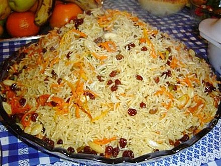

Background

The core ingredients are steamed rice mixed with caramelized carrots and dry raisins as well as marinated lamb meat. Qabeli palaw is commonly garnished with almonds and pistachios. Saffron may be added to either the rice, the sauce or the garnishes.[1][2] Varieties of Kabuli palaw have spread from Afghanistan to different parts of Western and Central Asia and Pakistan.[3]
Click here to learn more about Qabuli Palo!
Facts about Qabuli Palo
- it is delicious
- sweet and salty
- meat must be fried
- use lots of carrots
How to make Qabuli Palo
- Wash the rice
- Boil the rice
- Prepare the meat
- Grill the meat with oil and add spices
- Cut carrots and boil.
- Many other steps.. but don't forget to eat it!